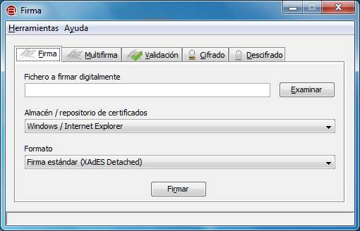
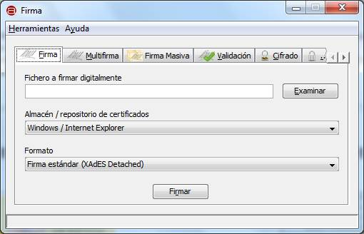

La interfaz de escritorio del Cliente @firma es una aplicación independiente que puede utilizarse sin necesidad de que el propio Cliente esté instalado en el sistema del usuario. Para la ejecución de esta interfaz es necesario cumplir con los requisitos detallados en el apartado "Requisitos mínimos del presente documento.
La vista principal de la interfaz de escritorio es:

En ella se muestra una serie de pestañas que permiten acceden a distintas funcionalidades de la Interfaz de Escritorio del Cliente @firma. Estas son:
Adicionalmente, es posible activar la vista avanzada de la Interfaz por medio de la pantalla de opciones (ver apartado "Opciones de configuración"), con lo cual la interfaz aparecería como sigue:

En la vista avanzada aparecen nuevas pestañas que dan acceso a otras de las funciones criptográficas del Cliente @firma. Es posible acceder a la totalidad de estas pestañas por medio de los botones con flecha Izquierda y Derecha que aparecen en el lado derecho de la lista de pestañas.
Las nuevas pestañas en la vista avanzada son:
Adicionalmente, la vista avanzada desbloquea nuevas opciones en elemento de las pestañas de la vista simple. Estas son:
La interfaz de escritorio dispone de un sistema de ayuda integrado. Cuando el usuario tiene alguna duda sobre el objetivo de un componente de la interfaz puede seleccionarlo y pulsar el botón "F1" de su teclado. El sistema de ayuda se activará y le mostrará la ayuda relativa al componente seleccionado.